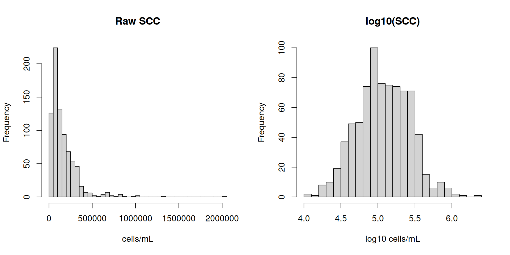
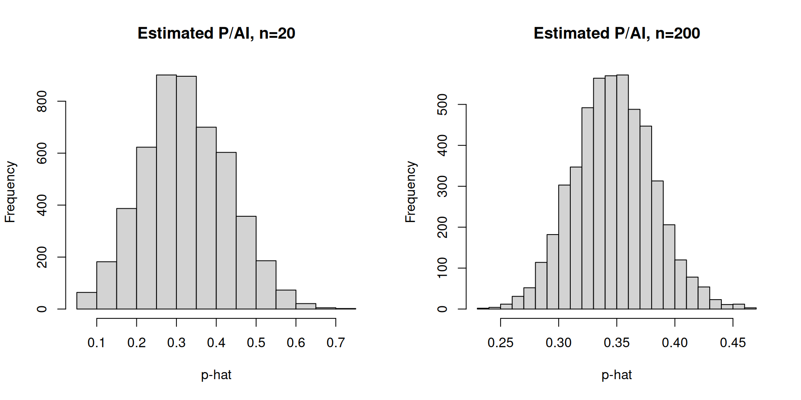
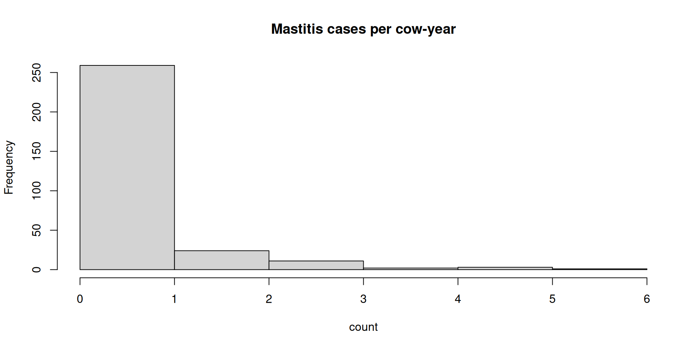
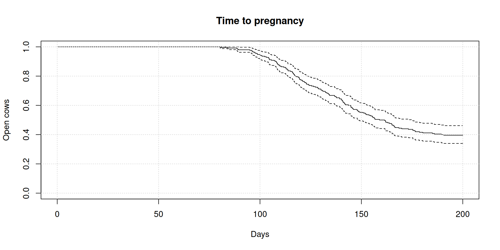

flowchart TD
Q["Start: What is your outcome?"] --> A{"Outcome type"}
A -->|Continuous| C{"Independent groups"}
A -->|Binary 0-1| B{"Groups"}
A -->|Counts| K{"Rate or exposure"}
A -->|Time-to-event| S["Survival model: Kaplan-Meier or Cox"]
C -->|2 independent groups| C2{"Approx normal?"}
C -->|Paired or repeated| CP["Paired t-test or mixed model"]
C -->|3 or more groups| CA["ANOVA or linear model"]
C2 -->|Yes| CT["t-test (Welch if variances differ)"]
C2 -->|No| CW["Wilcoxon, transform, or robust"]
B -->|1 proportion vs target| B1["Binomial test"]
B -->|2 proportions| B2{"Expected counts large?"}
B2 -->|Yes| B2a["Chi-square or two-proportion z test"]
B2 -->|No| B2b["Fisher exact test"]
B -->|Many covariates| BL["Logistic regression or mixed logistic"]
K -->|Counts per time/unit| KP{"Overdispersed?"}
KP -->|No| K1["Poisson regression"]
KP -->|Yes| K2["Negative binomial regression"]
K -->|Many zeros| KZ["Zero-inflated or hurdle models"]
S --> S2{"Clustering (herd or cow)?"}
S2 -->|Yes| S3["Frailty or mixed-effects survival"]
S2 -->|No| S4["Standard survival analysis"]
Lecture – Working with uncertainty in dairy science
ANSCI 4040 – Dairy Data Analysis & Analytics
Ass. Prof. Dr. Miel Hostens
Big idea
Every number you see on a farm is an estimate.
- It has sampling uncertainty (finite cows, finite days)
- It has measurement uncertainty (sensor error, missingness)
- It has model uncertainty (assumptions, misspecification)
Today we learn how to reason, quantify, and communicate that uncertainty.
Learning goals (part 1)
Translate a dairy question into (data type → model → test)
Run and interpret:
- a hypothesis test for a normal outcome (mean difference)
- a hypothesis test for a binomial outcome (proportion difference)
Explain the true value of a p-value (what it is / is not)
Learning goals (part 2)
Distinguish statistically different vs biologically different
Distinguish association vs prediction, and interpret Se/Sp/PPV/NPV/Accuracy
Part 1 — Uncertainty: where it enters the dairy pipeline
Where does uncertainty come from?
A. Sampling (finite cows, finite events)
Example: pregnancy rate on 25 AIs is noisier than on 250 AIs
B. Measurement (sensors, humans, lab assays)
Example: activity sensor misses mild estrus; SCC lab has CV
Where does uncertainty come from?
C. Model (assumptions)
Example: t-test assumes approximate normality / equal variances
D. Decision context (costs and consequences)
Example: a mastitis alert that fires too often wastes time
“Uncertainty” is not the enemy
In dairy science we often use data to:
- Understand (association, mechanism)
- Decide (intervention, management)
- Predict (risk scores, alerts)
Uncertainty can be:
- Quantified (SE, CI, posterior)
- Reduced (better design, more cows, better sensors)
- Managed (thresholds, decision analysis)
Part 2 — P-values: what they are, and what they are NOT
What a p-value is
A p-value is:
The probability (under the null hypothesis) of observing a result as extreme or more extreme than what you observed.
So it is a statement about data under a model, not about “truth”.
What a p-value is not
A p-value is NOT:
- The probability that the null hypothesis is true
- The probability your result will replicate
- A measure of effect size or biological relevance
- A “proof” of causality
Why reporting exact p-values matters
When reporting results:
- Prefer exact p-values (e.g., P = 0.003; P = 0.71) rather than only “P < 0.05”.
- Prefer effect sizes + confidence intervals around effects.
This matches good reporting guidance in dairy research.
Example reporting guidance: quantify p-values to <0.001 and prefer 95% confidence intervals around effect estimates. (Lean et al., 2016)[doi:10.3168/jds.2015-9445]
Part 3 — From question → data type → model → test
Decision tree: which test?
Data science × statistics: the handshake
Statistics helps you:
Choose a model aligned with the data-generating process
Quantify uncertainty (SE/CI)
Avoid false discoveries / overconfidence
Data science × statistics: the handshake
Data science helps you:
Build reproducible pipelines
Validate models out-of-sample
Scale to large, messy farm data
Best practice: combine both.
Part 4 — Hypothesis testing examples
Example 1 (Normal): milk yield change vs a target
Question: A farm says the new ration should increase 30-d milk yield by +4 lbs/day. We sample 24 cows and compute their change (after–before).
- Outcome: continuous (lbs/day)
- Design: paired (same cows)
- Model: approx normal differences
- Test: paired t-test
Code (R)
One Sample t-test
data: change
t = -3.379, df = 23, p-value = 0.002587
alternative hypothesis: true mean is not equal to 4
95 percent confidence interval:
1.212550 3.329529
sample estimates:
mean of x
2.27104 Interpreting the result: emphasize effect size
The test checks whether the mean of the variable change is equal to 4.
Hypotheses:
H0: The mean = 4
H1: The mean ≠ 4
What does the t-value mean?
t = -3.7808
- The negative sign means the sample mean is below 4
- The larger the absolute value of t, the stronger the evidence against H0
This suggests the mean is far from 4.
Degrees of Freedom
df = 23
This means:
- Number of observations = 24
(because df = n − 1)
The P-value
P-value = 0.0009681
What this means:
The probability of getting this result if the true mean were 4 is very small
Since 0.0009681< 0.05, the result is statistically significant
Conclusion:
We reject the null hypothesis.
Confidence Interval
95% Confidence Interval:
1.077941 → 3.144723
Important:
The value 4 is not inside the interval
This confirms that the mean is significantly different from 4
Sample Mean
Mean of change = 2.111332
Interpretation:
The average value is about 2.11
This is clearly lower than 4
Final Conclusion
The data show that:
The mean of change is significantly different from 4
The true mean is most likely between 1.08 and 3.14
The sample mean is 2.11
Final conclusion:
The average change is significantly lower than 4.
Is it biologically meaningful for the farm?
Example 2 (Binomial): conception rate vs a baseline
Question: In a timed-AI protocol, baseline P/AI = 0.35. After a management tweak we observe x = 18 pregnancies out of n = 40 AIs.
- Outcome: pregnancy (0/1)
- Model: binomial
- Test: binomial test (one-sample proportion)
Example 2 (Binomial): conception rate vs a baseline
Exact binomial test
data: x and n
number of successes = 18, number of trials = 40, p-value = 0.1883
alternative hypothesis: true probability of success is not equal to 0.35
95 percent confidence interval:
0.2925884 0.6150932
sample estimates:
probability of success
0.45 Example 3 (Two groups): pregnancy probability in 2 treatments
Question: Treatment A vs B; outcome is pregnant yes/no.
- If expected counts are large → chi-square / two-proportion test
- If expected counts are small → Fisher exact
Example 3 (Two groups): pregnancy probability in 2 treatments
Example 3 (Two groups): pregnancy probability in 2 treatments
Example 3 (Two groups): pregnancy probability in 2 treatments
Part 5 — Beyond normal & binomial: common distributions in dairy
Quick map: outcome → typical distribution
- Milk yield (daily): roughly normal after removing extremes; often needs mixed models
- SCC: often log-normal (or gamma) after log transform
- Clinical mastitis events per lactation: Poisson-like, but often overdispersed → negative binomial
- Time to pregnancy: survival/time-to-event
- Proportions (e.g., % infected): beta distribution on (0,1)
Example: SCC looks log-normal (why we log-transform)

Visual: same mean, different uncertainty

Poisson vs negative binomial
Question: Count of clinical mastitis cases per cow-year.
- Poisson assumes mean = variance
- Dairy health data often have variance > mean (overdispersion) → negative binomial
Poisson vs negative binomial
[1] 0.5933333[1] 1.004638
Time-to-pregnancy is survival data

Part 6 — Statistical vs biological difference
Why “statistically significant” can be misleading
You can get P < 0.05 when:
- The effect is tiny but n is huge
- The effect is real but irrelevant for welfare, economics, or practicality
You can also get P > 0.05 when:
- The effect might be meaningful but n is small
- There is high biological variability
Why “statistically significant” can be misleading
So always report:
- Effect size
- Confidence interval
- Context-specific threshold (“what difference matters?”)
Practical tool: define a “biological minimum important difference”
Examples (illustrative):
Milk yield: +2 lbs/d might matter economically on some farms
Conception rate: +3 to +5 percentage points might matter if sustained
Disease incidence: -2% incidence might matter if treatment cost is high
Sample size: how many cows do we need?
Effect size you care about drives sample size.
From the invited review on reproductive intervention studies:
- To detect an increase in pregnancy probability per insemination from 35% to 40% with power = 0.8 and α = 0.05, requires 1,471 cows per group.
- Additional cows may be required when there is clustering (e.g., cows within herds). (Lean et al., 2016)[doi:10.3168/jds.2015-9445]
Part 7 — Association vs prediction
Association answers “is X related to Y?”
- Goal: inference, explanation, mechanism
- Output: coefficients, CI, p-values
- Example: higher rumination is associated with lower disease odds
Prediction answers “can we forecast Y for a new cow?”
- Goal: accurate out-of-sample performance
- Output: sensitivity, specificity, PPV/NPV, ROC-AUC, calibration
- Example: build an early-lactation alert for ketosis
A model can have association without useful prediction.
A quick demonstration: strong association, weak prediction
If an outcome is rare, even a decent model can have low PPV.
- Prevalence: 5% disease
- Sensitivity: 80%
- Specificity: 90%
A quick demonstration: strong association, weak prediction
Let’s compute PPV/NPV.
Confusion matrix (definitions)
Let:
- TP = true positives
- FP = false positives
- TN = true negatives
- FN = false negatives
Then:
- Sensitivity (Se) = TP / (TP + FN)
- Specificity (Sp) = TN / (TN + FP)
- Accuracy = (TP + TN) / total
- PPV = TP / (TP + FP)
- NPV = TN / (TN + FN)
PPV/NPV depend strongly on prevalence.
Worked dairy example: mastitis alert
Assume 1,000 cows monitored in a period:
- True mastitis prevalence = 8% → 80 true cases
- Algorithm: Se = 75%, Sp = 92%
Compute counts:
TP FP TN FN
60 74 846 20 accuracy PPV NPV
0.9060000 0.4477612 0.9769053 If the algorithm flags a cow as having mastitis, there’s about a 45% chance it actually has mastitis.
So negatives are much more reliable than positives here.
Part 8 — A light touch: regression and ANOVA
Why regression shows up everywhere
A linear regression is:
- A model for continuous outcomes
- With predictors (continuous or categorical)
ANOVA is a special case:
- Same linear model
- Predictors can be categorical group indicators
Lactation yield vs DIM and parity
Call:
lm(formula = milk ~ DIM + parity, data = d)
Residuals:
Min 1Q Median 3Q Max
-8.5263 -2.2929 -0.2809 2.0793 11.6692
Coefficients:
Estimate Std. Error t value Pr(>|t|)
(Intercept) 34.406831 0.554947 62.000 < 2e-16 ***
DIM 0.001035 0.002562 0.404 0.687
parity2 2.489479 0.562992 4.422 1.62e-05 ***
parity3 3.061127 0.560607 5.460 1.43e-07 ***
---
Signif. codes: 0 '***' 0.001 '**' 0.01 '*' 0.05 '.' 0.1 ' ' 1
Residual standard error: 3.255 on 196 degrees of freedom
Multiple R-squared: 0.1476, Adjusted R-squared: 0.1346
F-statistic: 11.32 on 3 and 196 DF, p-value: 7.047e-07References
- Lean, I.J. et al. (2016). Recommendations for reporting intervention studies on reproductive performance in dairy cattle: Improving design, analysis, and interpretation of research on reproduction. Journal of Dairy Science 99:1–17. doi:10.3168/jds.2015-9445.

https://bovi-analytics.github.io/DigitalDairyManagementandDataAnalytics/